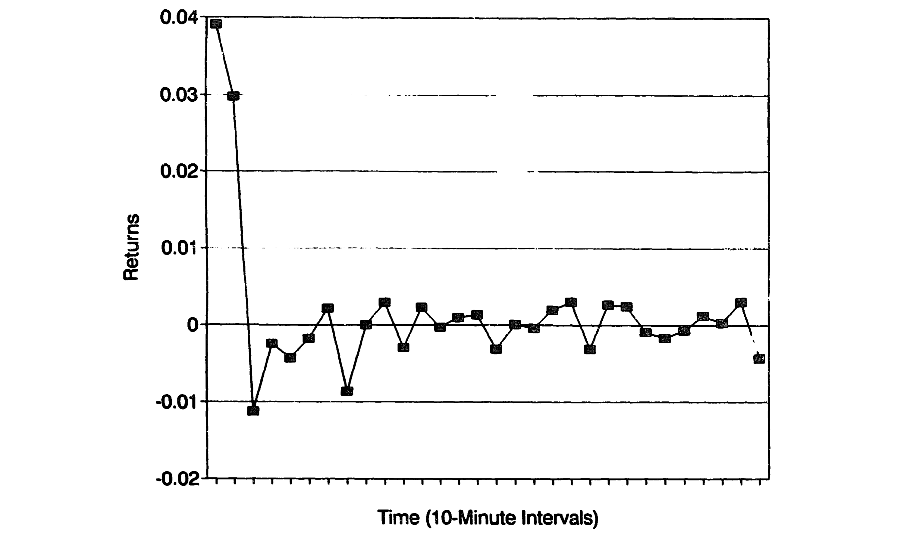
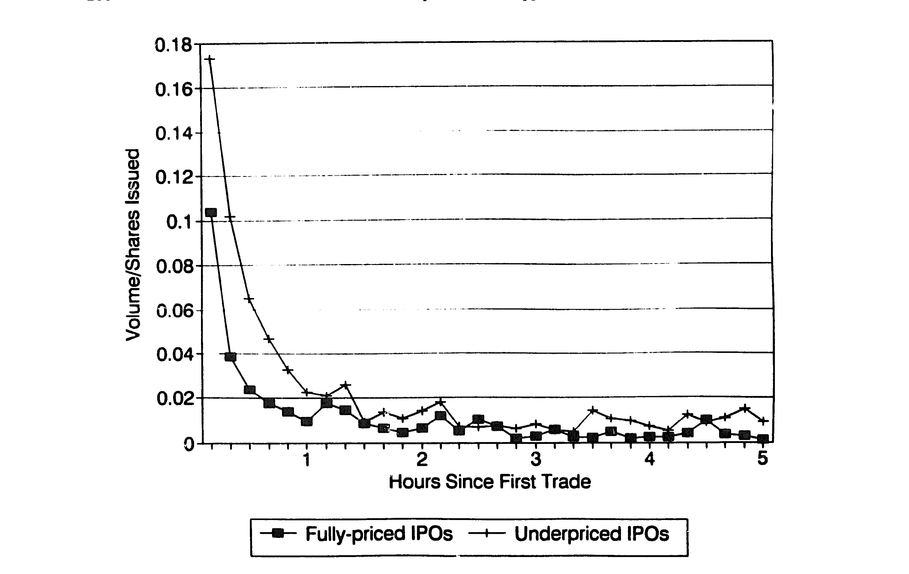
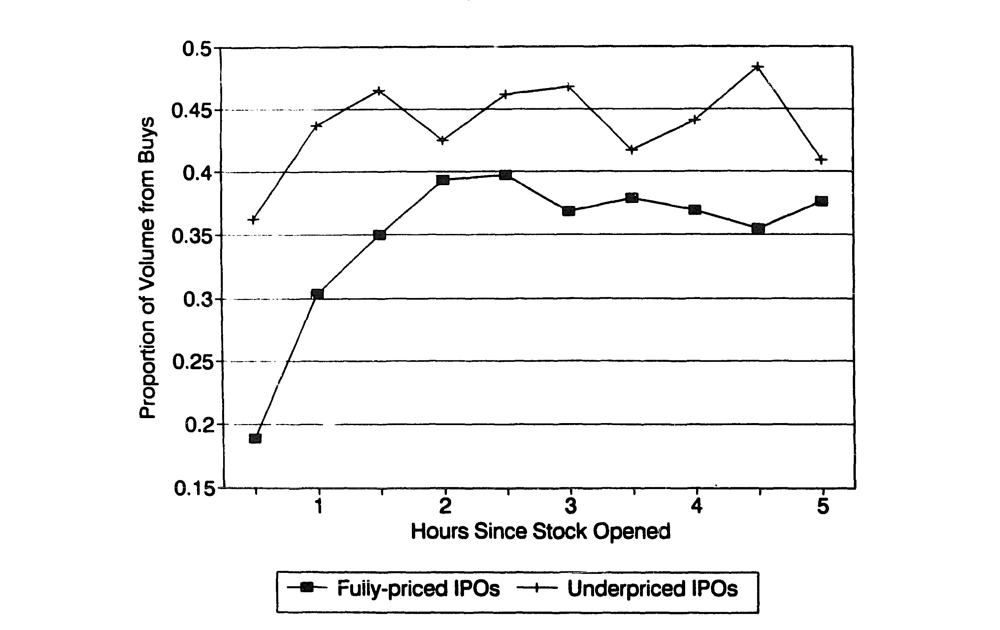
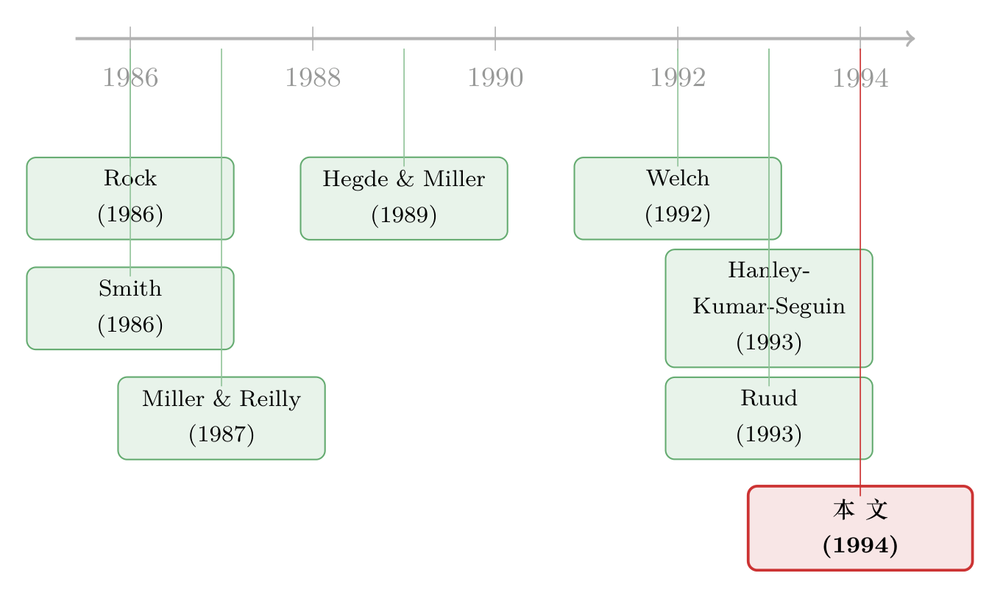

开盘头十分钟之后，新股就「不动」了——因为有人在替它托底
本文读的是 Schultz & Zaman (1994, Journal of Financial Economics)：作者用 72 只新股头三天里每一笔成交、每一次报价的逐分钟数据，第一次直接看到承销商如何在二级市场「托底」——他们替「冷」的新股长时间挂在最高买价上，并借「超额配售」的安排几乎无风险地回购掉约 21% 的发行量。而这套托底行为，反过来为「新股为什么要打折」这个老谜题提供了一条间接证据。
1 引言：一个被「平均」藏起来的细节
关于首次公开发行（initial public offering, IPO），金融学里有一个几乎被讲烂了的事实：新股上市第一天，平均会「跳涨」一截。这就是著名的新股折价之谜（IPO underpricing）——发行人明明可以把价格定得更高，却偏偏把一大笔钱留在了桌上。围绕「为什么」，几十年里长出了一整片理论森林：信息不对称、赢家诅咒、信号传递、瀑布效应……（关于发行人为什么对此并不「上火」，可参见《盖茨的那场「不高兴」：新股为什么总把钱留在桌上》。）
但这些理论几乎都盯着同一个时刻：发行那一刻的定价。它们问的是「offer price 为什么定低了」。
Schultz 和 Zaman 这篇 1994 年的论文，却把镜头往后挪了几分钟——挪到了股票真正开始在二级市场交易之后。他们想问的不是「发行价为什么低」，而是一个更具体、也更少有人能回答的问题：
新股上市之后，承销商到底在二级市场里做了什么？
这听上去像个微观结构的小问题，但作者很快让你意识到，它其实是同一个谜题的另一面。
2 研究问题：折价与「托底」，是同一枚硬币
先把作者的核心论点摆出来：他们把二级市场的「稳定」（stabilization）看作折价的互补品（complement），而不是两件无关的事。
什么意思？维持一只新股的二级市场价格不跌破发行价，背后的动机，可能恰恰就是当初把发行价定低于真实市场价的动机。换句话说——
如果你能在二级市场看到承销商在「托底」，那么你就间接看到了他们「为什么要折价」。看不见的定价动机，会在看得见的托底行为里留下指纹。
于是问题被切成了三段，全文也就此展开：
- 首先，承销商到底有没有在二级市场托底？（第 4.2 节）
- 接着，一个自然的问题是：如果有，那这股「买盘」的痕迹该出现在哪里——是报价里，还是成交里？（第 4.2、4.3 节）
- 然后，真正关键的一步：他们用什么方式托底，是「永久地」减少股票供给，还是只是「临时地」托着等以后再卖？而这又怎样把价格风险压到几乎为零？（第 4.3 节）
要回答这些问题，过去的研究只能靠间接证据——价差宽窄、成交量高低。Schultz 和 Zaman 第一次拿到了能直接看见承销商之手的数据。
3 识别策略与数据：把每一笔报价都按住
作者的「识别」并不是一个 DiD 或 IV 那样的因果设计，而是一种直接观测：用足够细的数据，把承销商和其他做市商的行为一笔笔分开看。这正是这篇论文的稀缺之处。
数据。 样本是 1992 年 3 月 31 日至 6 月 1 日之间发行的 72 只包销（firm-commitment）新股，数据来自 Bridge Quotation System 这套实时报价服务。对其中在 NASDAQ 交易的 64 只，作者拿到了每一个做市商的开盘报价以及全天每一次报价更新；成交数据则包含价格、股数、精确到分钟的时间戳。观测单位是「分钟级的报价/成交」，这在 1990 年代初是极其少见的颗粒度。一个代价是：样本偏向大盘发行——不计超额配售，72 只里有 32 只募资额超过 2500 万美元。
两套切分。 这是全文方法论的灵魂。作者不是把样本一刀切死，而是用了两把不同的尺子：
- 按当下价格切：在每一个时点，把样本分成在发行价之上交易的「热（hot）」IPO 和在发行价或之下交易的「冷（cold）」IPO。注意这是动态的——一只股票可以从热变冷、再从冷变热。这把尺子用来比较承销商对「该托底」和「不必托底」的股票，做市行为有没有差别。
- 按首日初始收益切：把样本分成初始收益为正的「折价（underpriced）」IPO 和收益为零或负的「全价（fully-priced）」IPO。这把尺子用来看买卖单的时间序列。
买卖单怎么定。 成交被分为买单或卖单，用的是一套三段式规则：先看成交价相对买卖价中点的位置（约 74% 的成交这样分类）；价差在该分钟内变动的，按最高卖价/最低买价归类（再分约 9%）；剩下的用 tick rule，即与上一笔比价高者为买、低者为卖（约 15%）。[Lee 和 Ready (1991) 证明，这套 tick test 对中点成交的分类正确率超过 85%。]
4 第一个发现：所有的「涨」，都挤在头十分钟
在追问承销商之前，作者先给了我们一个让人愣一下的事实。
把首日收益按十分钟一格画出来（如图 1 所示），你会发现——那个著名的首日跳涨，几乎全部发生在交易的头十分钟里。样本里，从发行价到第一笔成交的平均收益是 3.9%，开盘后头十分钟又额外贡献了约 3%；而此后一整天、乃至第二天、第三天的收益，都与零没有统计差别。

Figure 1: Average intraday aftermarket returns for the first day of trading for 72 IPOs issued between
这个事实本身就值得玩味：如果首日收益是市场在「慢慢发现价值」，它不该在十分钟内就尘埃落定。它更像是开盘那一下集中释放、之后价格就被「按住」不动了。是谁按住的？
接着看成交量。如图 2 所示，作者把首日成交量分别画给折价和全价两类发行。折价股的成交从一开盘就远高于全价股——头一个小时里，折价股有 43% 的发行股数换了手，全价股只有 21%；而且这种差距贯穿了整个首日。[Miller 和 Reilly (1987) 也报告过新股二级市场的高换手，但他们样本的首日换手率约 22%，远低于本文。]

Figure 2: First-day trading volume as a proportion of shares issued for 72 IPOs issued between March
成交那么大，价格却纹丝不动——尤其是那些「全价」「冷」的股票。一个自然的问题于是浮出来：这么多卖单砸下来，是谁在接？
5 第二个发现：报价里的指纹——承销商死守在「最高买价」上
要抓托底的现行犯，最干净的地方是报价。如果承销商在托底，他就应该比别人更频繁地把自己挂在 inside bid（全场最高买价）上——尤其是当股价跌到发行价以下（冷）的时候。
数据正是这样说的。在首日，承销商平均有 86.1% 的时间挂在最高买价上，当 IPO 是冷的时候；而当它是热的时候，这个比例只有 63.1%。两者之差的 t 值为 3.64，在 1% 水平上显著。第二、三天结论一致。
这个对比是反直觉的关键：一只股票越「冷」、越没人要，承销商反而越要长时间地举着最高买价。这恰恰是「托底」的定义——在没人撑的时候去撑。
而其他做市商呢？方向完全相反。首日里，非承销商的做市商对冷 IPO 只花约 10% 的时间在最高买价上，却花了约 47% 的时间在最高卖价（inside ask）上——也就是说，对一只冷股票，普通做市商站在卖价一侧的概率，是站在买价一侧的约四倍。所有人都在往外卖，只有承销商一个人在死守买价。
作者还做了一个漂亮的稳健性检验：把承销商的报价剔除后重算全场的 inside quote。结果是——剔掉承销商后，最高买价通常会变低（尤其对冷 IPO），价差随之变宽；而最高卖价几乎不变。这说明承销商的报价是单边的：他只在买的那一侧人为地把价格顶高，卖的那一侧则随行就市。这正是「价格被托在了供需均衡之上」的直接证据。
6 反转：那这股买盘，最后买成了什么？
到这里，承销商在「报价」上托底已成铁证。但一个更尖锐的问题接踵而至：光是举着买价没用，得真有卖单砸过来、他真的接下来，才算托底。 价格若真被人为顶在均衡之上，我们就应该看到——支持的股票里，卖单会系统性地多于买单。
作者于是换上第二把尺子（按初始收益分组），去看买单占总成交量的比例。结果如表 2：首日，折价 IPO 有 37.7% 的成交量来自买单，全价 IPO 只有 27.8%（差异 t 值 -2.59，5% 显著）；第二天差距收窄、不显著；第三天差距重新显著。换句话说，全价（冷）股票里卖单的失衡更严重——大家都在抛，而某个人在默默接盘。
把首日按半小时拆开（如图 4 所示），这个图景更刺眼：在最活跃的头 30 分钟里，折价股约 35% 的成交是买单，全价股却只有 17%。整个首日，折价股的买单占比始终高于全价股。

Figure 4: shows the average percentage of volume attributed to buy orders for
那个「接盘的人」是谁，已经呼之欲出。但真正关键的一步，是作者接下来揭示的机制——他们怎样接下这么多股票，却几乎不承担价格风险。
7 核心贡献：一份「无风险」的回购，藏在超额配售里
这是全文的题眼，也是它区别于所有前人的地方。
承销商怎么可能「无风险」地大量回购一只正在下跌的股票？答案藏在一个看似平淡的条款里：超额配售选择权（overallotment option，俗称「绿鞋」）。作者拿到了 54 份最终招股书，全部 54 份都带有超额配售权，其中 48 份允许承销商额外购买相当于发行量 15% 的股票。
这个安排让承销商在「卖多少」上有了一道活门。诀窍是这样运作的：
- 承销商一开始就超卖——把全部发行量再加上 15% 的超额配售一起卖出去，于是自己先天就背着一个等于 15% 发行量的空头。
- 如果新股是热的：股价站在发行价之上，承销商就行使超额配售权，从发行人手里按发行价买进那 15% 的新股来平掉空头。整个 115% 的股票留在公众手里，承销商还多赚一笔佣金。
- 如果新股是冷的：股价跌破发行价，承销商就不行权，转而在二级市场里低价买回股票来平掉那 15% 的空头。
看出妙处了吗？承销商是借着发行价的空头去回购的。冷股票跌破发行价时，他在市场上买回的价格低于他当初卖出的发行价——这笔回购不但不亏，反而锁定了价差。托底因此变成了一笔近乎无风险的买卖。 同时，把这 15% 的股票从市场上抽走，等于减少了流通供给——如果一只股票的长期需求曲线是向下倾斜的，减少供给就能带来价格的永久抬升。
数据完美印证了这套逻辑。作者发现，若股价在头三天始终高于发行价，超额配售权被行使的概率高达 90.4%；若价格从未超过发行价，行使概率只有 26.1%。 热则行权、冷则不行权——和机制预言的一模一样。
那回购的量呢？这是表 3 给出的、最震撼的一组数字。三天里，承销商平均买进了相当于发行量 21.7%（全价）和 24.9%（折价）的股票，而卖出的极少（全价 0.37%、折价 3.20%）。净买入对两类股票几乎一样多——都在 21% 上下（全价净买 21.3%、折价净买 21.7%，两者之差的 t 值仅 -0.10，完全不显著）。这个 ~21% 的净回购规模，恰好够覆盖一个超额配售那么大的空头。
注意这里的反差：折价股票里，承销商卖出的（3.2%）和买进的（24.9%）相比微不足道；全价股票里更是几乎只买不卖。一个不在托底的做市商，买卖应当大致相抵——非承销商做市商正是如此（净买卖在两类股票里都接近相互抵消）。承销商却是单边的巨量净买入。这就是「托底」最硬的证据。
到这里，整条故事线闭合了：开盘头十分钟价格集中释放 → 之后被按住不动 → 因为承销商死守最高买价 → 卖单失衡说明价格被顶在均衡之上 → 而他能这样接盘，是因为超额配售让回购几乎无风险。
8 那么，回到最初的问题：为什么要折价？
作者从不掩饰，全文的终极意义不在微观结构本身，而在它对折价之谜的间接证据。第 2 节里，他们梳理了几条「既能解释折价、又能解释托底」的动机——而二级市场托底的存在，等于给这些动机投了一票：
- 反悔的看跌期权。 投资者在认购前的「意向」并不具约束力，确认买单后五个工作日内反悔也不受法律惩罚。于是 IPO 投资者手里实际握着一个把股票按发行价「退还」给承销商的看跌期权。承销商必须为这个被写出去的看跌期权拿到补偿；但各州对承销佣金常有 10%–15% 的上限（Barry, Muscarella & Vetsuypens, 1991），于是只能靠折价来压低这个期权的隐含执行价、减少其价值。
- 阻断瀑布效应。 Welch (1992) 指出，投资者会观察「前面的人买不买」来决定自己买不买；一串拒绝就能让后来者全体退场，哪怕股票定价公允也会发行失败。承销商在二级市场托住价格，就能让后来者无法从「价格跌破发行价」里读出坏消息——折价则从一开始就降低了「一串拒绝」出现的概率。
- 声誉的事前绑定。 Smith (1986) 把托底放进承销商声誉的框架：一个有「事后回购高价股票」名声的承销商，能让自己未来承销的新股被事前认为更不易被高估（关于这一点，可参见《price-stabilization-as-a-bonding-mechanism-in-new-equity》）。
- 法律责任。 Tinic (1988) 认为，1933 年证券法下的法律风险既是折价的动机，也是托底的理由——不过 Drake 和 Vetsuypens (1992) 发现折价新股的买家和高价新股的买家一样爱打官司，给这条动机泼了点冷水。
这些动机里，没有任何一个是这篇论文「证明」的。但它把抽象的定价动机，第一次落到了可观测的二级市场行为上：你看不见承销商心里在为什么折价，但你能看见他在二级市场为这只股票做了什么——而后者，正是前者的影子。
9 文献脉络
这条研究的演进，可以看成「证据颗粒度」一路变细的过程。
早期的工作都只能间接地推断托底。Miller 和 Reilly (1987)、Hegde 和 Miller (1989) 注意到新股的二级市场价差比别的股票更窄、成交量更高，并把它和折价联系起来。Hanley, Kumar 和 Seguin (1993) 走得更远，他们用 1982–1987 年 1,523 只包销新股，建了一个「承销商的稳定性买价为其他做市商提供了一个看跌期权」的模型，预言被稳定的新股价差更窄、且一旦停止稳定价格就会下跌。Ruud (1993) 则从分布形状切入：她发现约四分之一的新股首日收益为零、收益分布右偏，并猜测这是托底延迟了负初始收益的显现。

与此同时，折价之谜本身也在被各种理论填充——Rock (1986) 的赢家诅咒、Benveniste 和 Spindt (1989) 的信息揭示、Allen 和 Faulhaber (1989) 与 Grinblatt 和 Hwang (1989) 的信号模型，以及 Welch (1992) 的瀑布效应。这些模型大多并不直接预言二级市场托底。
Schultz 和 Zaman 的位置，就在这两条线的交汇处：他们是第一篇用逐分钟的承销商报价数据来直接看托底的论文。前人只能从价差、成交量、收益分布里「推测」托底存在；他们则把承销商一笔笔的买价和回购摆在了你面前。沿着这条线往后，关于新股头几天「谁在交易」的研究继续细化（可参见《新股开盘那天的「滔天」成交，到底是谁在卖？》与《新股第一天的滔天成交，到底是谁在交易？》）。
10 评论与延伸（Q&A + 研究方向）
(a) 几个可能的疑问
Q：「稳定」和「操纵」有什么区别？承销商人为顶高买价，难道不是操纵价格吗？
关键区别在于披露与规则。美国证券法在特定条件下允许承销商进行价格稳定（且需遵守相应披露），它被视为发行机制的一部分，而非欺诈性操纵。本文也并不在做法律判断，而是在记录这种被允许的行为的实际形态——承销商单边地守在买价、借超额配售无风险回购，这些都在规则框架之内。
Q：作者怎么区分「永久地减少供给」和「临时地托着等以后卖」这两种托底？
两种机制有不同的可检验含义。「永久减供给」靠的是不行使超额配售权、把 15% 的股票从市场抽走，依赖向下倾斜的长期需求曲线（Loderer, Cooney & Van Drunen, 1991；Bagwell, 1992）。「临时托底」（Hanley, Kumar & Seguin, 1993）则预言一旦停止支持价格就会下跌。本文的证据——冷股票时几乎只买不卖、且行权概率随价格高低在 90.4% 与 26.1% 之间剧烈分化——更支持「通过超额配售调节供给」这一侧。
Q：开盘头十分钟就涨完、之后不动，会不会只是因为信息很快被吸收，而不是托底？
单看图 1 确实无法区分。但把它和报价、成交合起来看就不一样了：如果是信息吸收，价格之后该随机游走，不该出现「承销商死守买价 + 卖单系统性失衡」的组合。正是「价格被按住」与「单边巨量净买入」同时出现，才把解释推向了托底。
Q：t 值 3.64、净回购差异 t 值仅 -0.10，这些数字可信吗？样本才 72 只。
样本量小确实是软肋（且偏向大盘发行）。但本文的力量不在样本量，而在每只股票内部的逐分钟信息量——
86.1%vs63.1%这样的对比是在巨量报价更新上算出来的。而「净回购对两类股票几乎一样、t 仅 -0.10」恰恰是论文想要的结论：无论冷热，承销商都回购约 21%，正好对应一个超额配售的规模。
Q：回购股数是怎么估出来的？会不会高估了承销商的角色？
作者坦承这是近似而非精确计数：他们按每分钟承销商占 inside bid/ask 报价的比例，假设买量平均分给挂在卖价上的做市商、卖量平均分给挂在买价上的做市商，再加总。这个「人人机会均等」的假设未必成立，且数据不含做市商对零售客户的交易。所以 21% 这个数字应被读作量级，而非小数点后两位的精度。
Q：这套机制对今天的新股还适用吗？毕竟数据是 1992 年的 NASDAQ。
机制的核心——超额配售/绿鞋 + 超卖 + 二级市场回购——至今仍是承销的标准操作，逻辑没有过时。但 1992 年的 NASDAQ 是离散报价、多做市商结构；如今十进制报价、电子化交易、以及监管对稳定行为的披露要求都变了。把同样的逐笔识别搬到现代数据上，结论是否依旧，本身就是个好题目。
(b) 几个可能的研究问题与提案
1. 把这套「无风险回购」识别搬到公司债的二级市场。 - 【经济故事】公司债承销同样有超额配售与稳定操作，而新债上市初期常有显著折价（可参见《新债上市第一笔成交，凭什么白赚 47 个基点？》）。承销商是否也在用类似机制托住新债价格、无风险回购？这能把「股票折价之谜」的微观证据迁移到信用市场。 - 【可行性】中。TRACE 提供了债券逐笔成交，但交易商身份不公开，难以像本文一样分离承销商报价；需要监管层的 FINRA 加密交易商 ID 或承销团名单匹配。识别可行但数据门槛高。
2. 外资承销与本地承销的托底强度是否不同？ - 【经济故事】跨境上市与外资主承销时，承销商的声誉资本、法律暴露、以及对本地需求曲线的把握都不同，托底的力度与方式可能系统性地有别。这能把本文的声誉/法律动机放到一个有外生差异的环境里检验。 - 【可行性】中。需要跨国新股的交易商级报价数据（如某些有做市商披露的市场），并按主承销商国籍分组；识别靠承销团构成的横截面差异，doable 但样本拼接成本不低。
3. 当超额配售被「打满」与「没打满」时，二级市场流动性的命运。 - 【经济故事】行权与否直接改变流通供给。把样本按「绿鞋是否行使」分组，比较其后续数月的价差、深度、波动——能直接检验「永久减供给」假说对长期流动性的含义，而不止首日。 - 【可行性】高。绿鞋行使情况在发行后公告里可得，二级市场流动性指标用日频数据即可构建；这是一个相对干净、数据可及的事件研究设计。
4. 用「托底强度」反推折价动机的横截面。 - 【经济故事】本文论证托底是折价的影子。那么反过来：在那些法律风险更高、或瀑布效应风险更大（如散户占比高、信息更分散）的发行里，托底是否更猛？若是，就能把不同折价理论拆开来分别赋权。 - 【可行性】中。需要交易商级报价 + 发行特征（散户配售比例、诉讼环境、行业不确定性）的匹配；识别靠这些代理变量与托底强度的相关，能做，但因果解释要小心内生性。
11 我的判断
贡献。 这篇论文的价值，几乎全部来自它的数据稀缺性与机制的清晰。在 1992 年能拿到每个做市商的逐分钟报价，本身就是一项壮举；而作者没有把这份数据浪费在堆砌相关性上，而是用它讲清了一个极其干净的故事——承销商如何借超额配售把「托底」变成一笔无风险买卖。「热则行权（90.4%）、冷则不行权（26.1%）」「净回购约 21%、冷热无差异（t=-0.10）」这两组数字，是我读过的关于 IPO 稳定机制最有说服力的直接证据。它把一个原本只能靠价差、收益分布去「猜」的行为，变成了可以一笔笔看见的事实。
对识别的担忧。 我最在意三点。其一，回购量是近似估计——「买量平均分给挂卖价的做市商」这个假设很强，且不含零售对手盘，21%/24.9% 应被当作量级而非精确值。其二，样本小且偏大盘（72 只、过半募资超 2500 万美元），向小盘、高风险发行外推要谨慎，而后者恰恰是 Barry, Muscarella & Vetsuypens (1991) 指出的佣金上限最咬人、因而折价动机最强的群体。其三，本文是观测而非因果：它确凿地展示了「托底存在」，但「托底是折价的证据」这一步仍是逻辑推断，而非被识别出来的因果链——同样的事实，也能与「承销商只是在被动做市、顺手平掉绿鞋空头」相容。
后续想看到什么。 我最想看的，是把这套逐笔识别放进现代、十进制、电子化的市场里重做一遍：当报价不再离散、当高频做市商挤进来，承销商的「死守买价」还看得见吗？其次，我想看到它向公司债迁移——信用市场的承销同样有绿鞋，而新债折价真实存在，若能在 TRACE 上分离出承销商之手，将是把这篇 1994 年论文的洞见，接到今天最活跃的研究前沿（外资持有人、信用流动性）上的一座桥。
参考文献
- Allen, F., & Faulhaber, G. R. (1989). Signaling by underpricing in the IPO market. Journal of Financial Economics 23(2), 303–323.
- Bagwell, L. S. (1992). Dutch auction repurchases: An analysis of shareholder heterogeneity. Journal of Finance 47(1), 71–105.
- Barry, C. B., Muscarella, C. J., & Vetsuypens, M. R. (1991). Underwriter warrants, underwriter compensation, and the costs of going public. Journal of Financial Economics 29(1), 113–135.
- Benveniste, L. M., & Spindt, P. A. (1989). How investment bankers determine the offer price and allocation of new issues. Journal of Financial Economics 24(2), 343–361.
- Drake, P. D., & Vetsuypens, M. R. (1992). IPO underpricing and insurance against legal liability. Financial Management 22, 64–73.
- Grinblatt, M., & Hwang, C. Y. (1989). Signalling and the pricing of new issues. Journal of Finance 44(2), 393–420.
- Hanley, K. W., Kumar, A. A., & Seguin, P. J. (1993). Price stabilization in the market for new issues. Journal of Financial Economics 34(2), 177–197.
- Hegde, S. P., & Miller, R. E. (1989). Market-making in initial public offerings of common stocks: An empirical analysis. Journal of Financial and Quantitative Analysis 24(1), 75–90.
- Lee, C. M. C., & Ready, M. J. (1991). Inferring trade direction from intraday data. Journal of Finance 46(2), 733–746.
- Loderer, C. F., Cooney, J. W., & Van Drunen, L. D. (1991). The price elasticity of demand for common stock. Journal of Finance 46(2), 621–651.
- Miller, R. E., & Reilly, F. K. (1987). An examination of mispricing, returns, and uncertainty for initial public offerings. Financial Management 16, 33–38.
- Rock, K. (1986). Why new issues are underpriced. Journal of Financial Economics 15(1–2), 187–212.
- Ruud, J. S. (1993). Underwriter price support and the IPO underpricing puzzle. Journal of Financial Economics 34(2), 135–151.
- Schultz, P. H., & Zaman, M. A. (1994). Aftermarket support and underpricing of initial public offerings. Journal of Financial Economics 35(2), 199–219.
- Smith, C. W. (1986). Investment banking and the capital acquisition process. Journal of Financial Economics 15(1–2), 3–29.
- Tinic, S. M. (1988). Anatomy of initial public offerings of common stock. Journal of Finance 43(4), 789–822.
- Welch, I. (1992). Sequential sales, learning, and cascades. Journal of Finance 47(2), 695–732.